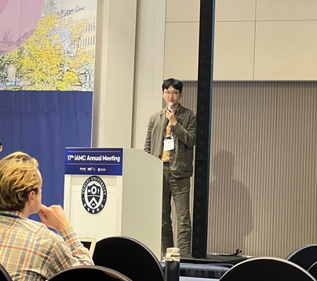
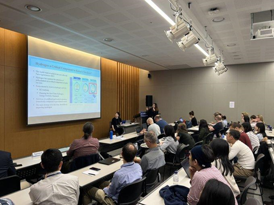
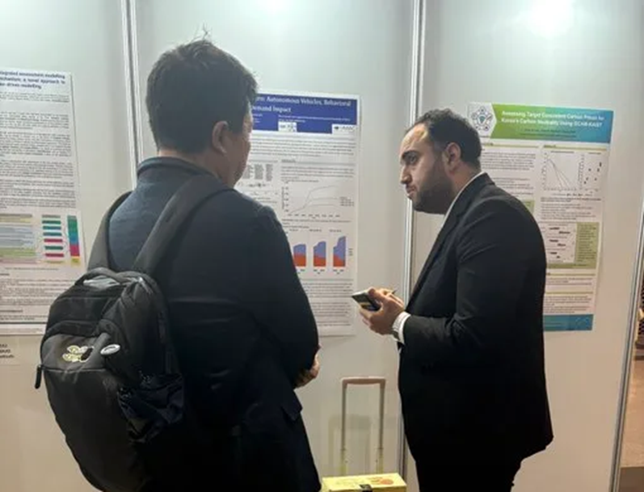
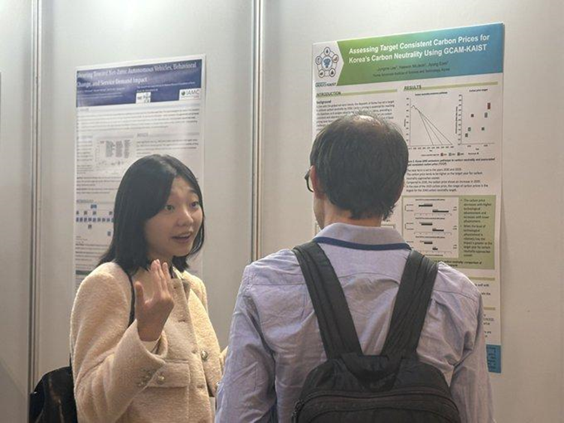
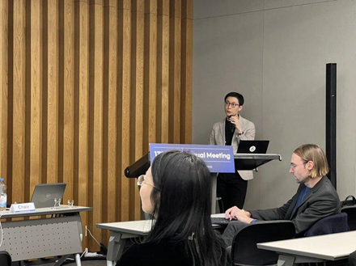

KAIST IAM Group at the 2024 IAMC Annual Meeting
KAIST-IAM 그룹 멤버 8명이 11월 4일부터 3일간 열린 2024 IAMC Annual Meeting에 참가하였다.
The KAIST-IAM team, comprising eight members, participated in the 2024 IAMC Annual Meeting, held from November 4 to 6.
엄지용 교수는 첫날 플레너리 세션에서 녹색 성장을 향한 실증적 GDP-배출 분리 및 IPCC AR6 경로의 비교분석에 대해 발표하였다.
Prof. Jiyong Eom delivered a plenary presentation on the first day, about the Empirical Decoupling of GDP and Emissions for Green Growth and Comparative Analysis of IPCC AR6 Pathways.
전해원 교수는 미세먼지에 관한 한미 공동 연구를 발표하며, 미국의 기후 행동이 대기질에 미치는 영향을 분석한 결과를 공유하였다.
Prof. Haewon McJeon presented a Korea-U.S. joint study on climate change and air pollution, sharing findings on the impact of U.S. climate actions on air quality benefits.

안지석 박사과정은 IPCC 데이터를 활용한 한국의 COP28(신재생 및 원전 3배 확대) 선언 전망을 발표하며, 한국의 기후 목표를 데이터 기반으로 분석하였다.
PhD student Jiseok Ahn presented the Korea’s COP28 declaration (a tripling goal of renewable and nuclear power) using IPCC data, providing a data-driven outlook on the country’s climate goals.


권지원 석사과정은 한국의 수소 무역 연구를 발표하였다. 이를 통해 수소 무역 구조를 IAM에 도입하여 한국의 수소 수입 추정 양상을 소개할 기회를 가졌다.
Master’s student Jiwon Kwun presented research on Korea’s hydrogen trade. The study introduced hydrogen trade structures into IAM, offering insights into Korea’s projected hydrogen import trends.

아메드 박사과정은 자율주행차의 IAM 도입 연구를 주제로 포스터를 발표하며, 교통 부문의 탄소 감축 가능성을 소개하였다.
PhD student Ahmed Mahmoud presented a poster on the integration of autonomous vehicles into IAM, exploring the potential for carbon reduction in the transportation sector.

이정미 석사과정은 Target Consistent Carbon Prices(TCCP)을 활용한 한국의 적정 탄소가격 연구를 포스터로 발표하며, 탄소 가격 책정에 대한 신선한 접근법을 선보였다.
Master’s student Jungme Lee presented a poster on Korea’s optimal carbon pricing, introducing a fresh approach using Target Consistent Carbon Prices (TCCP).


그리고 조정호 (석사졸업)은 한국 철강 산업의 탄소중립 연구를 발표하며, 철강 산업에서 고로 폐지가 2050 탄소중립 목표에 미치는 영향을 분석한 결과를 공유하였다.
Jeongho Jo (Master’s graduate) delivered a presentation on Korea’s carbon neutrality in the steel industry, highlighting the implications of phasing out blast furnaces on achieving the 2050 carbon neutrality target.
마지막으로, KAIST-IAM 팀은 중국 북경대, 인도 CEEW, 사우디 KAPSARC, 스페인 BC3와 함께 GCAM Global User Committee를 공동 출범하였다. 이를 통해 향후 국제 공동 연구의 협력과 발전 가능성을 한층 더 확대할 것으로 기대된다.
Lastly, the KAIST-IAM team, in collaboration with Peking University, India’s CEEW, Saudi Arabia’s KAPSARC, and Spain’s BC3, jointly launched the GCAM Global User Committee. This initiative is expected to significantly enhance international cooperation and foster advancements in joint research.
이번 회의는 한국에서 처음 열린 IAMC Annual Meeting으로, KAIST-IAM 팀은 이를 성공적으로 마무리하며 3일간의 여정을 마쳤다.
At the first-ever IAMC Annual Meeting held in Korea, the KAIST-IAM team successfully delivered for the event, marking a memorable three-day journey.